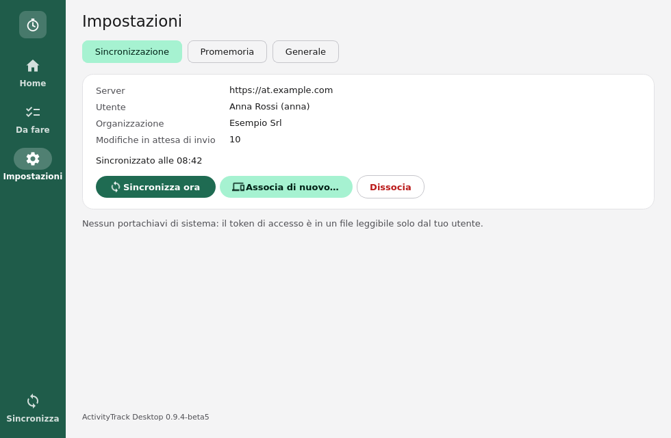

0.9.9
Version 0.9.9 (November 2026). ActivityTrack Desktop is the PC app of ActivityTrack. It lives in the notification area, next to the clock, and keeps the running activities and the To-dos a click away. So an activity, even a short one, goes in from the keyboard instead of the phone.
The interface is in Italian; the screenshots show it as it is.
Without a network the PC keeps working: the changes leave when the network is back. Reports, master data and management systems stay with the phone and the web.
On the PC ActivityTrack is one application with
three interfaces: this one in the notification area, the command line
(activitytrack, package activitytrack-cli) and
the full-screen terminal interface (activitytrack-tui).
They use the same data (~/.local/share/activitytrack, on
Windows %APPDATA%\activitytrack) and the same pairing: what
is done with one shows at once in the others. They all depend on the
library python3-activitytrack.
From the releases page (https://gitlab.com/activitytrack/activitytrack-desktop/-/releases):
sudo apt install ./python3-activitytrack_<version>-1-<distro>_all.deb ./activitytrack-desktop_<version>-1-<distro>_all.deb.
ActivityTrack shows in the applications menu.pip install from its repository). Unpack
activitytrack-desktop-<version>.tar.gz and, in its
folder, start python3 -m activitytrack_desktop.ActivityTrackDesktop-<version>-setup.exe. It installs
for the current user, without administrator rights. The program is
not signed (no certificate costs): at the first run
Windows SmartScreen warns; choose "More info" → "Run
anyway". To check the file, compare its SHA-256 with
SHA256SUMS of the same release.On XFCE the icon shows when the panel has the notification area ("Status Tray" or "Notification Area" plugin). GNOME without the AppIndicator extension has no notification area: ActivityTrack then stays open in a window.
activitytrack://pair.The link is good for 10 minutes and once. After pairing the PC downloads the user's data and keeps them up to date.

Impostazioni → Sincronizzazione (settings → sync) shows server, user, organisation, the changes waiting and those the server refused ("Non sincronizzati"), with "Sincronizza ora" (sync now), "Associa di nuovo…" (pair again) and "Dissocia" (unpair). Unpaired, the PC keeps its data; paired with another server or user it starts again from nothing.
The access token is kept in the system's keyring (KWallet, GNOME Keyring, Windows Credential Manager). Without one it is in a file only one's own user reads, and the page says so.
The icon takes the colour of the running activity: green at work, yellow on pause, blue travelling, grey when nothing runs. A red dot says the sync has a problem (not paired, pairing revoked, incompatible versions).
Closing the window only hides it: ActivityTrack stays in the notification area until "Esci".
The window looks like the app: on the left the green bar with Home, Da fare (to-dos) and Impostazioni (settings) (Ctrl+1, Ctrl+2, Ctrl+3) and, at the bottom, Sincronizza (sync, F5) with a red dot when the sync has a problem. It is light or dark as the system.

The Home is the phone's:
The coloured strip on the left of each card is the company's (or the client's) colour chosen on the web or on the phone.

They work while the ActivityTrack window is active; the buttons' tooltips recall them.
| Keys | What it does |
|---|---|
| Ctrl+N | New activity (quick entry) |
| Ctrl+P | Pause the activity at work or travelling; when none is, resume the paused one or the latest suspended |
| Ctrl+T | Stop the big card's activity; with details missing it opens "Completa l'attività" |
| Ctrl+D | New To-do |
| Ctrl+F | Search the list |
| Ctrl+1, Ctrl+2, Ctrl+3 | Home, Da fare, Impostazioni |
| F5 | Sync now |
| Ctrl+Enter | Confirm the open form |
With several activities at work together (when the policy allows it) Ctrl+P asks which, in a small list: Enter picks the first, the latest.
Start, pause and stop also have shortcuts that work from any program: §10.

"Nuova attività" (from the menu, the Home or with Ctrl+N) opens the quick entry, on top of the other windows:
Ctrl+Enter starts it. "Altri campi…" (more fields) goes to the full form with what was typed.
The full form opens from the Home's ⋯ menu too, "Modulo completo…".

Company, client, role, quick pick, description, locality, notes and tags, as the policy says (it may rename, hide or require them). For an existing activity it also shows the times: each stretch (work, travel, pause) can be changed or deleted, and a new one added, when the policy allows it. Two overlapping stretches mark the activity "da verificare" (to check).
The company comes before the client and filters its list; a known client chosen brings its company.
Dates and times are typed in the format chosen in Impostazioni → Generale, or picked: the calendar from the field's arrow and, for times, the app's 5-minute grid from the ▦ button next to the field. One row per hour, 12 hours at a time (▲ Prima / Dopo ▼ move the window by 3 hours). Start and end are chosen together: drag from the first cell to the last, or click the first and then the last, and OK; at the top the range and its length, the hatched cells are taken by other activities of that day. Orario esatto (exact time) with Usa takes the minutes off the grid (e.g. 09:37).

Stop (or Ctrl+T) closes the activity at once when it has client and description. Otherwise, or when it comes from a To-do, it asks what is missing:

"Chiudi l'attività" (close it) completes it (without a description it asks to confirm); "Più tardi" (later) leaves it among the "Dettagli mancanti" (details missing) of the Home.
Below the running activities the Home has one list, as the app: In ritardo (overdue), Dettagli mancanti, Oggi (today), Prossimi giorni (next days), Giorni precedenti (earlier days), Senza data (no date), Ignorate (ignored). The filters period (Oggi, 24 h, 3 gg…), state (to-dos, details missing, done, ignored), company and tag are buttons with their menu, coloured when they are not the initial ones, and are remembered; Cerca (search, Ctrl+F) narrows the list to the rows with the words typed.
Each row has its state's mark on the left: ! overdue, the clock when planned, the circle when open, the pencil when details are missing, the square when closed, the tick when done. A To-do has the round buttons Avvia (start: an activity with its data) and Fatto (done) and, in the ⋯ menu, Posticipa (postpone), Ignora (ignore) and Modifica… (edit); a click on the row opens it. An activity with details missing has Completa… (complete).

The Da fare section (Ctrl+2) shows them all, by due date and plan, with "Anche le fatte" (done ones too), Ignorate, the company and the search; "Nuovo Da fare" (or Ctrl+D) makes one.

The form has title, company, client, notes, references (tickets, links: one per line), due date, plan (day, time, duration) and priority. A To-do from a management system is not deleted: it is ignored.
The phone's, as desktop notifications:
On Linux the notifications have the buttons. On Windows, or where the notifications have none, a click opens the question in a window:


Impostazioni → Promemoria (reminders) switches each on or off and sets the intervals; those the policy fixes are grey. The phone shows the same reminders: an answer that changes the activity or the To-do also counts on the other device.

Impostazioni → Generale has:
apt), the new version is
reported but not downloaded: the package manager
updates it. "Anche le versioni beta" (betas too)
includes the test versions. The policy may fix both.Three key combinations work from any program, even with ActivityTrack's window closed:
| Keys | What they do |
|---|---|
| Ctrl+Alt+A | opens the new activity's window in front |
| Ctrl+Alt+P | pauses the activity at work or travelling (the most recent); when there is none, resumes the one on pause, else the latest suspended |
| Ctrl+Alt+S | stops the running activity; when details are missing it opens the sheet to complete it in front |
When more than one activity qualifies (concurrent activities), a small window asks which. Pause, resume and stop are confirmed by a notification.
In Generale → Scorciatoie globali (global shortcuts) each one is switched on or off and takes other keys (Ctrl, Alt or Super are needed, except for the function keys); "Ripristina predefinite" (restore defaults) goes back to the ones above. The line below says how they work on this desktop:
python3-xlib package, which the .deb package
installs; with the .tar.gz, install it from the
distribution;When a key is already taken by another program, the line says so. Where the shortcuts are not available, or to use keys of your own, assign a desktop shortcut to one of these commands:
activitytrack-desktop --start # new activity
activitytrack-desktop --pause # pause or resume
activitytrack-desktop --stop # stopThe command goes to the ActivityTrack already open; when it is not
open it starts it in the notification area and runs the command. On
Windows the program is ActivityTrack.exe in the
installation folder
(%LOCALAPPDATA%\Programs\ActivityTrack), with the same
options.
The PC gets the phone's policy and applies the keys that concern it: features (activities, travels, to-dos, planning, ignoring and deleting), fields (names, required, hidden, read-only), editable times, free tags, activities only from To-dos, central master data only, reminder intervals, updates. The phone-only keys (location, calls, widgets…) do not concern it.
| Problem | What to do |
|---|---|
| A shortcut does not work | Read the line under Scorciatoie globali in
Generale: the key may be taken by another program, or
python3-xlib may be missing (X11). Otherwise assign
activitytrack-desktop --pause (or --start,
--stop) to a key in the desktop's settings |
| The icon does not show | XFCE: add the notification area to the panel. GNOME: the AppIndicator extension is needed |
| Windows: "Windows protected your PC" | The program is not signed: "More info" → "Run anyway" |
| "Codice scaduto o già usato" (code expired or used) | The link is good for 10 minutes and once: make another on the web |
| "Il certificato del server non è valido" (certificate not valid) | The server has a self-signed certificate: use a link just made, which carries its key |
| "Il server ha revocato l'associazione" (pairing revoked) | Pair the PC again from the web: the data stay |
| "Il server non accetta più questa versione" (version no longer accepted) | Update ActivityTrack Desktop (Impostazioni → Generale, "Controlla ora") |
| "Va aggiornato il server" (the server must be updated) | Tell the ActivityTrack Web administrator |
| An activity made on the phone does not show | It comes within 30 seconds; F5 ("Sincronizza") brings it at once |